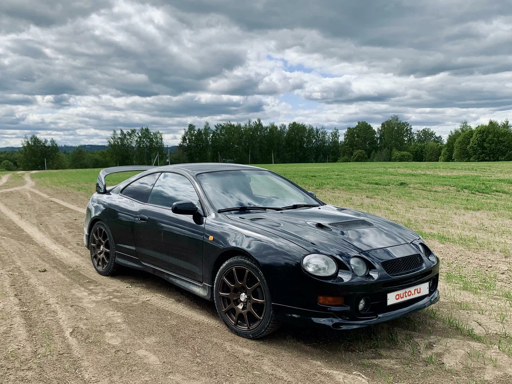
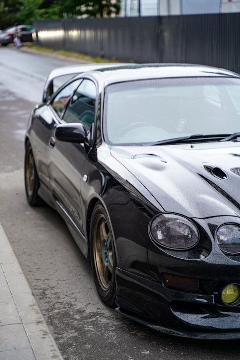
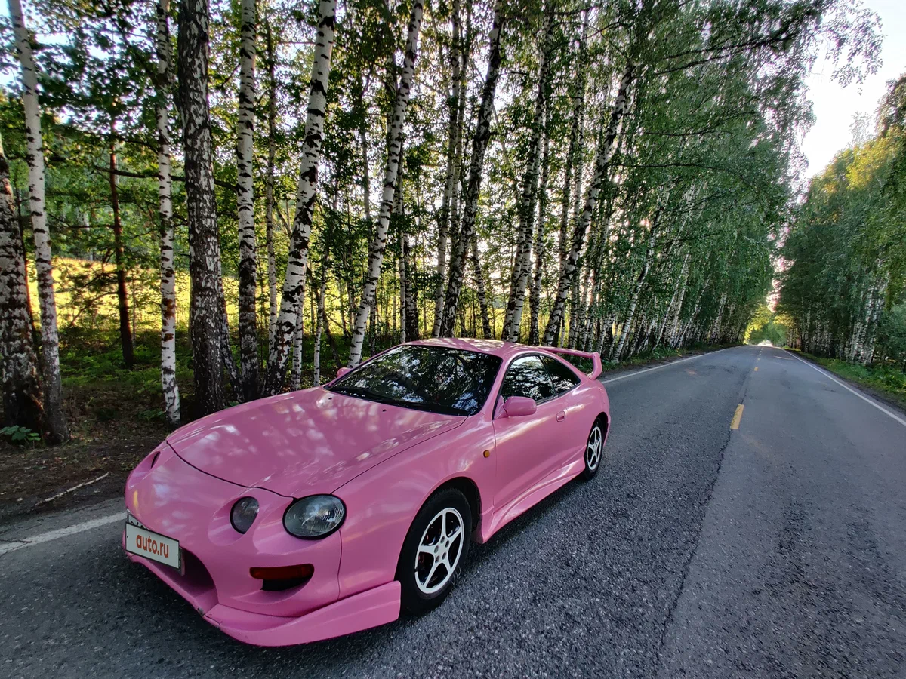

Переход к новой концепции
Представленная в 1993 году Toyota Celica T200 ознаменовала собой радикальный поворот в истории модели. Если предыдущие поколения (особенно T180) имели угловатый, клиновидный дизайн, то T200 примерила на себя плавные, округлые, «органичные» формы, диктуемые аэродинамической модой 90-х. Это был сознательный шаг в сторону более массового, но не менее спортивного образа.
Аэродинамика и стилистика
- Дизайн, созданный в калифорнийской студии Toyota (Calty), отличался выразительными «пухлыми» крыльями, высокой и короткой кормой, а также узнаваемой рельефной линией, идущей от переднего колеса через всю дверь.
- Особенностью стали поднимающиеся фары на базовых версиях, которые в 1996 году (после рестайлинга) уступили место статичным прозрачным блокам.
- Автомобиль строился на новой платформе с передним приводом (для большинства модификаций), что сделало его проще, легче и доступнее, сместив акцент с чистой мощности на азартную управляемость и ежедневную практичность.
Целевая аудитория
Celica T200 позиционировалась как стильный и динамичный спорт-купе для молодежи и активных людей, предлагая яркий дизайн, хорошую оснащенность и репутацию надежной Toyota. Это был уже не суровый «гран-туризмо», а модный и технологичный спорткар своего времени.


Двигатели и основные модификации
Линейка двигателей была основана на хорошо зарекомендовавшей себя рядной «четверке» серии
3S. Выбор силового агрегата кардинально менял характер автомобиля, предлагая спектр от комфортного круизера до нервного спорткупе.
- 3S-FE (2.0 л, 135 л.с.): Атмосферный, надежный и экономичный двигатель для базовых комплектаций. Идеален для повседневной езды, обеспечивая плавную тягу на низких и средних оборотах.
- 3S-GE (2.0 л, 180-200 л.с.): Атмосферный, но уже с системой изменения фаз газораспределения VVTi (после рестайлинга) и двумя распредвалами (DOHC). Ставился на спортивные версии SS-II и SS-III. Этот мотор обладал высокой литровой мощностью, отличной отзывчивостью и характерным спортивным звуком, раскрываясь на высоких оборотах.
- 3S-GTE (2.0 л, турбо, 245-255 л.с.): Легендарный турбированный двигатель, сердце флагманской полноприводной версии Celica GT-FOUR (ST205). Оснащался эффективным интеркулером водяного охлаждения (WTA) и продвинутой для своего времени системой управления, обеспечивая мощную, эластичную тягу.
Вершина эволюции: Celica GT-FOUR (ST205)
Эта модификация была создана не просто как топовая версия, а как
гомологированная раллийная машина для выполнения требований Группы A в чемпионате мира по ралли (WRC). Каждая деталь в ней работала на скорость и контроль.
- Помимо мощного турбодвигателя, она получила усовершенствованную систему постоянного полного привода с межосевым дифференциалом Torsen и системой управления вязкостной муфтой (V-Flex), что обеспечивало идеальное сцепление в любых условиях.
- Шасси было кардинально усилено, а под капотом появился знаковый «рамный» каркас (Super Strut Bar), существенно повышавший жесткость кузова для точной работы подвески.
- Специально для этой модели была разработана уникальная Super Strut Suspension — подвеска, сочетающая преимущества схемы McPherson и двойных поперечных рычагов. Это решение минимизировало изменение развала колес при кренах, обеспечивая беспрецедентную точность рулевого управления и устойчивость в скоростных поворотах.
- Массивный задний спойлер с интегрированным воздухозаборником для охлаждения интеркулера стал ее визитной карточкой, а также функциональным аэродинамическим элементом.
Комплектации и рестайлинг
Помимо GT-FOUR, существовала четкая градация комплектаций, отражавшая назначение автомобиля:
SS-I (базовая, с 3S-FE, акцент на комфорт),
SS-II (спортивная, с 3S-GE, улучшенная подвеска и интерьер) и
SS-III (люксовая, с максимумом опций). В 1996 году автомобиль пережил рестайлинг: изменились бамперы, оптика (исчезли поднимающиеся фары, уступив место статичным прозрачным блокам), появились новые двигатели с системой VVTi, что немного повысило экологичность и эластичность, а также улучшилась отделка салона. Этот апдейт помог модели оставаться конкурентоспособной и современной до конца жизненного цикла.
Феномен сбалансированного спортивного купе
Шестое поколение Celica оказалось невероятно успешным коммерчески. Оно удачно сочетала в себе броский дизайн, приемлемую цену, знаменитую надежность Toyota и острые ощущения от вождения. Это сделало ее мечтой для многих молодых водителей по всему миру. Модель прославилась своими раллийными успехами в составе заводской команды Toyota Team Europe, где Carlos Sainz стал на ней чемпионом мира в 1994 году.
Плюсы и минусы владения сегодня
Плюсы:
- Яркий, но не стареющий дизайн 90-х, вызывающий ностальгию.
- Надежность и ремонтопригодность атмосферных двигателей серии 3S.
- Острая, точная управляемость и легкое рулевое управление, особенно в версиях с подвеской Super Strut.
- Культовый статус GT-FOUR как одной из последних великих раллийных «легенд» для дорог.
- Относительная доступность запчастей для нефлагманских версий.
Минусы и «болевые точки»:
- Поднимающиеся фары на ранних моделях — частый источник проблем с механизмом и электроприводом.
- Сложность и дороговизна обслуживания систем GT-FOUR: полный привод, турбодвигатель, Super Strut Suspension. Ремонт требует глубоких знаний и кошелька.
- Коррозия: крылья, пороги, элементы днища — слабые места, особенно в наших условиях.
- Двигатель 3S-GTE: При износе или низком качестве обслуживания возможны проблемы с турбиной, интеркулером, прогоранием поршней.
- Возраст: общий износ интерьера, электроники, уплотнителей.
Коллекционная ценность и итог
Сегодня Celica T200 переживает период второго признания. Ее ценят за эталонный дизайн 90-х и невероятную эмоциональность. Атмосферные версии с 3S-GE — отличный выбор для ценителя стиля и тактильного драйва. GT-FOUR (ST205) — это уже коллекционный раритет, стремительно растущий в цене, объект охоты для фанатов ралли и японской спортивной классики. Шестое поколение Celica подвело черту под эрой «просто быстрых и надежных» японских купе, оставшись в истории как одна из самых гармоничных, красивых и успешных моделей в своей линейке.

 89081317488
89081317488

 8(908)131-74-88
8(908)131-74-88.svg) fayther2@yandex.ru
fayther2@yandex.ru